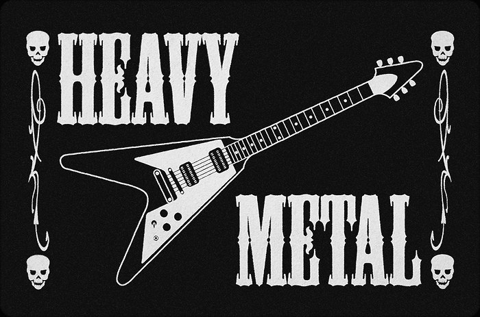
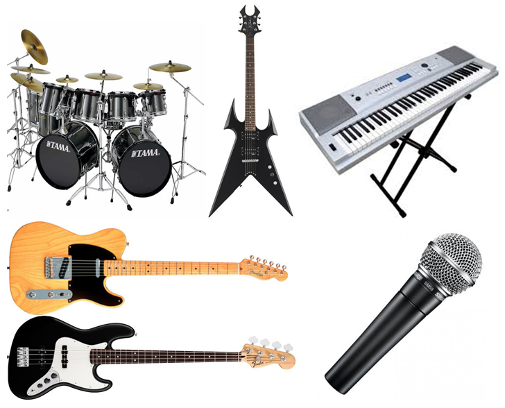
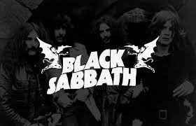

El heavy metal (literalmente en español metal pesado) es un género musical que tiene elementos del rock and roll, blues y música clásica. Se caracteriza por ritmos potentes logrados mediante la utilización de guitarras distorsionadas, batería con doble pedal, y bajo pronunciado.
Un año clave para el género del que hablamos fue 1968. Durante esta época surgieron muchos de los grupos que se encargaron de sentar las bases del Metal y sacar los primeros discos y canciones de este estilo. Tres de los más importantes fueron Led Zeppelin, Deep Purple y Black Sabbath. Todos tuvieron su origen en Reino Unido.
Aunque Led Zeppelin no se puede considerar propiamente un grupo de Metal, sin duda es una de las claves del género. En su primer disco, también llamado Led Zeppelin, lanzado en 1969 y perteneciente al Hard Rock se pueden escuchar ciertos temas que encajan perfectamente en el nuevo estilo que estaba surgiendo, como Communication Breakdown o Good Times, Bad Times. En sus siguientes álbumes, se mantuvieron en este estilo, llegando a considerarse una de las mejores bandas de la historia, con canciones imprescindibles para cualquier amante del Hard Rock o el Metal.
El Metal es un genero musical derivado del Hard Rock, del Acid Rock y del Blues. Ademas incorpora elementos caracteristicos de la musica clasica. El Metal se caracteriza por el uso de guitarras distorsiondas, bajos robustos y baterias versatiles, todo esto en conjunto para crear un sonido potente, ritmico y estridente.
Instrumentos comunes: Voz - guitarra eléctrica - bajo eléctrico - batería
Los inicios del Heavy Metal se forjaron cuando se utilizaron guitarras distorsionadas en el Blues y Rock, lo que hizo endurecer su sonido. Las primeras influencias fueron Jimmy Hendrix, Led Zeppelin, Deep Purple y Black Sabbath (precursores del Heavy Metal).
Iron Maiden. 2.361.718 oyentes. Metallica. 3.363.659 oyentes. Black Sabbath. 2.850.341 oyentes. Judas Priest. 1.540.495 oyentes. Motörhead. 1.734.206 oyentes. Ozzy Osbourne. 2.068.968 oyentes.
